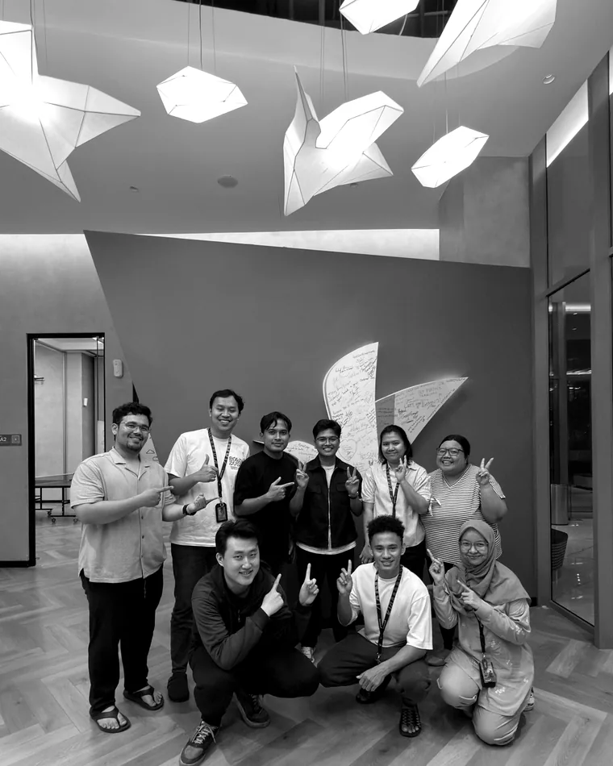
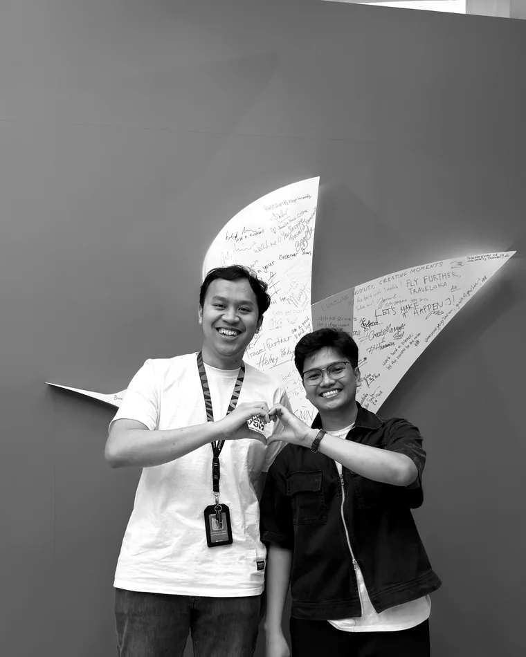
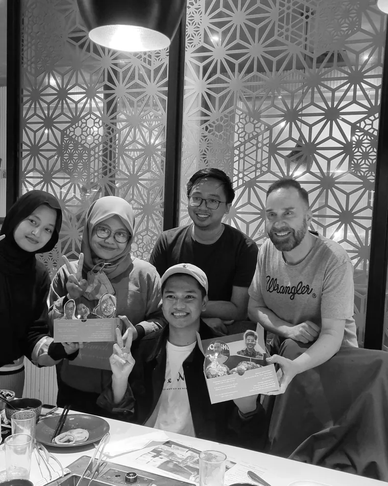

Quality starts at the PRD, not at the ticket.
Impact gets written into the PRD, dev writes the tech spec and the unit tests, QA receives a feature that already had bugs reasoned about. Then I check the premise, not just the build.
Senior QA engineer, four years in fintech, e-commerce and travel. I write the automation — Playwright suites, API checks, CI/CD pipelines — own test strategy and shift-left practice, and build the AI tooling that QA and dev teams run on. Every figure on this page carries the command that produced it.
The numbers above come from a machine, not a spreadsheet. This is it doing its job: a rough note in a Lark channel becomes a ticket with steps, environment, epic and a duplicate check — and the reporter confirms it before it exists in Jira.
Free text. No steps, no environment, no idea whether it has been reported three times already.
Login fails with email + password on dev-v2
REVIEW GATE — the reporter confirms before this reaches Jira. Nothing is filed blind, and the model never decides on its own.
190+ tickets have gone through this path. The epic matcher is deterministic and covered by its own fixtures; the prose is the model's, the decision is not.
Three rules I actually enforce on real work — not values on a wall.
Impact gets written into the PRD, dev writes the tech spec and the unit tests, QA receives a feature that already had bugs reasoned about. Then I check the premise, not just the build.
"Ninety-nine percent coverage" is a claim, not evidence. I put the source under every number — and when I recount my own figure and it's wrong, the correction ships too.
Model decisions run at temperature 0, have unit tests, and get a human check before anything reaches Jira. A tool that guesses confidently is a defect, not a feature.
Six systems across two companies — Traveloka, one of Indonesia's largest tech platforms, and the fintech trading platform I work on now. Each opens into the problem, the decisions I would defend, and what I would do differently.
One automation net across four Platform domains — Homepage, Merchandising & Promotions, User Identity & Security, Messaging — running on web, mWeb, iOS, Android and API. Regression that used to cost story points every release.
PLAYWRIGHT · MAESTRO · APPIUM · KARATE · TESTRAIL · GITHUB ACTIONS
Login and register moved to SSO and email, social login added for the Japan and Korea expansion, and account deletion taken off the support queue and made self-service.
IOS · ANDROID · MWEB · API · WEB CONTAINER PARITY
A Lark bot that turns a rough bug note into a clean Jira ticket — with steps, environment, epic match and a duplicate check — plus a RAG knowledge base over the internal PRDs.
LARK · SUPABASE EDGE FUNCTIONS · DENO/TS · PGVECTOR · GEMINI EMBEDDINGS · DEEPSEEK RERANK
Replaces the Master Calculation spreadsheet. Computes Expected vs Dashboard vs OZ across four trade methods, fires trade triggers, and proposes a fix for rejected orders.
FASTIFY · REACT/VITE · PGLITE · BOOTSTRAP · VITEST
Regression coverage for the configuration revamp: role, user, login, five configuration screens, dashboard and company — built on page objects and fixtures, so a failure points at a cause and not at a file.
PLAYWRIGHT · JAVASCRIPT · PAGE OBJECT MODEL · FIXTURES · GITLAB CI
Playwright with playwright-bdd, so Gherkin compiles to native specs instead of costing the runner its parallelism, tracing and reporting. The README states what was left out and how to add it.
PLAYWRIGHT · PLAYWRIGHT-BDD · TYPESCRIPT · GITHUB ACTIONS
Every figure I put in public, with the command that produced it. Toggle to hide anything I have not re-derived from source.
| Claim | Value | Where it comes from | State |
|---|---|---|---|
| Commits on AMB Copilot | 211 | git rev-list --count HEAD | Verified |
| Edge functions in production | 22 | 24 dirs, minus _shared and _tests | Verified |
| Unit tests in the bot | 823 | Deno.test blocks, across 30 files | Verified |
| Playwright UI tests | grep '^test(' — 100 carry a TCMS case ID | Corrected | |
| Spec files covering the revamp | src/tests/**/*.spec.js, counted per file | Corrected | |
| QA Dashboard test blocks | 180 | grep '^(it|test)(' across test/** | Verified |
| Commits on QA Dashboard | 50 | git rev-list --count HEAD | Verified |
| Jira tickets opened through the bot | 190+ | Jira filter by bot author | Reported |
| Bug pairs reviewed by the LLM judge | 930+ | recurrence evaluation log | Reported |
| SA documents converted to Jira stories | 22 | Jira, stories created by the sync | Reported |
| PRDs and technical docs indexed | 217 | document table row count | Reported |
| People with knowledge-base access | 25 | MCP users: QA, engineering, product, BD | Reported |
| Mobile E2E coverage, Traveloka | 86.07% | 2026 run report; target was 85% | Reported |
Showing all figures. Toggle to isolate what has been checked against source.
Verified means the number was re-derived on 12 November 2026 from the repositories themselves. Reported means I supplied it from the system it lives in; it cannot be reproduced from this page, so it is a claim awaiting a source — treat it as such.
Four years of shipping QA in product companies, plus the years before that which made me comfortable with systems I did not build.
PT Surya Anugrah Mulya
Experience & R&DTraveloka — Platform
Homepage · Merchandising · Identity · MessagingPT Gokomodo Indonesia
Web · Mobile · APITelkom University
B.Eng, Electrical Engineering · 2015–2020
None of the work above was done alone. These are the people I tested with — and the table we ended up at after a release.



Open to senior QA, SDET and quality-engineering roles. Jakarta or remote. Bahasa Indonesia and English.